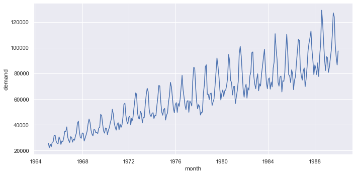
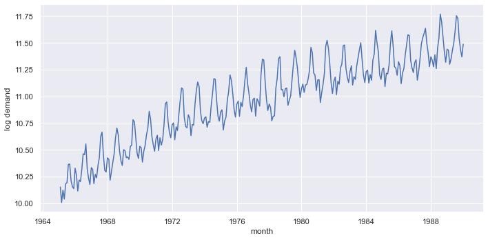
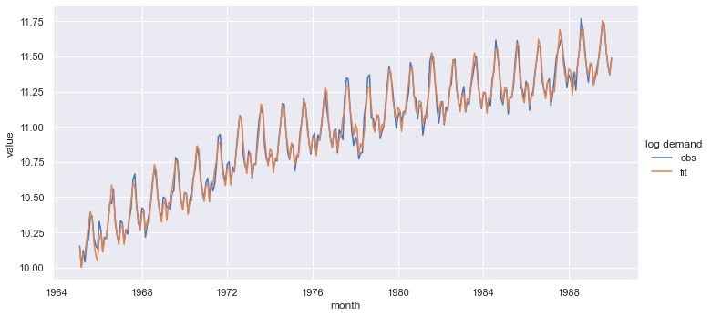
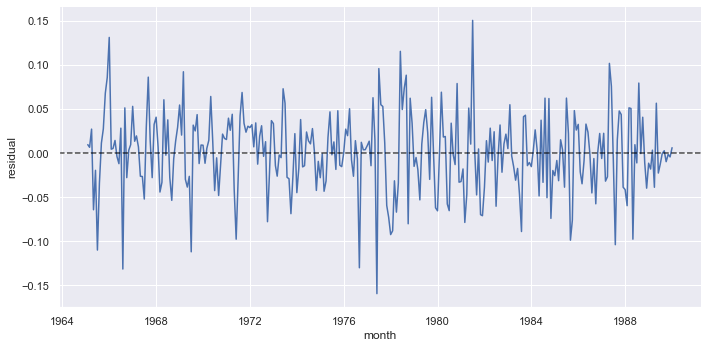
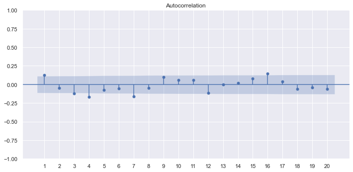
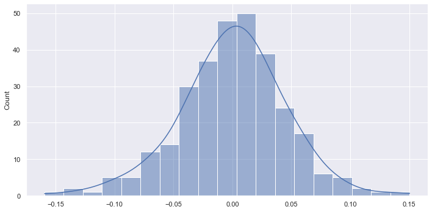
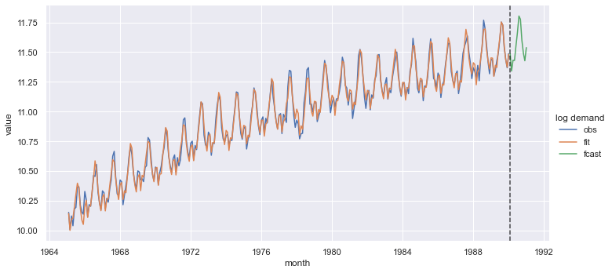

import numpy as np
import pandas as pd
from scipy import stats as st
from statsmodels import api as sm
from statsmodels.tsa import api as tsa
from statsmodels.graphics import tsaplots
from matplotlib import pyplot as plt
import seaborn as sns
import laughingrook as lrHolt-Winter’s Exponential Smoothing
M249
Statistics
TimeSeries
Summary notes
Use Holt-Winter’s exponential smoothing method to model a seasonal time series with a trend.
Data was taken from the Open University’s M249, Practical Modern Statistics.
We use StatsModels’ ExponentialSmoothing1 class to model the time series.
Fitting the time series using the ExponentialSmoothing.fit method returns an instance of HoltWinterResult.2
This topic is covered in M249, Book 2, Parts 2.7 & 2.9
Dependencies
Set the graphing defaults. (This is optional.)
sns.set_theme()Main
Load the data
electricity = lr.datasets.get_csv_file('m249/timeseries/electricity.csv')
electricity.info()<class 'pandas.core.frame.DataFrame'>
RangeIndex: 300 entries, 0 to 299
Data columns (total 3 columns):
# Column Non-Null Count Dtype
--- ------ -------------- -----
0 date 300 non-null object
1 demand 300 non-null int64
2 sademand 300 non-null float64
dtypes: float64(1), int64(1), object(1)
memory usage: 7.2+ KBInitialise and plot the time series
The first observation is in January 1965.
electricity['date'].head(1)0 Jan-1965
Name: date, dtype: objectInitialise the Series.
ts_demand = pd.Series(
data=electricity['demand'].to_numpy(),
name='demand',
index=pd.date_range(
start='1965-01',
periods=electricity['demand'].size,
freq='M',
name='month'
)
)
ts_demand.info()<class 'pandas.core.series.Series'>
DatetimeIndex: 300 entries, 1965-01-31 to 1989-12-31
Freq: M
Series name: demand
Non-Null Count Dtype
-------------- -----
300 non-null int64
dtypes: int64(1)
memory usage: 4.7 KBPlot the time series.
_g = sns.relplot(x=ts_demand.index, y=ts_demand, kind='line', aspect=2)
plt.show()
Transform time series.
ts_logdemand = ts_demand.map(np.log).rename('log demand')
_g = sns.relplot(x=ts_logdemand.index, y=ts_logdemand, kind='line', aspect=2)
plt.show()
Smooth the time series
Model and fit the time series.
holtwint = tsa.ExponentialSmoothing(
ts_logdemand,
trend="additive",
seasonal="additive",
initialization_method='estimated'
)
fitted = holtwint.fit()Construct a DataFrame holding both the observed and fitted time series.
all_ts_logdemand = pd.merge(
left=ts_logdemand.rename('obs'),
right=fitted.fittedvalues.rename('fit'),
left_index=True,
right_index=True
)
all_ts_logdemand.info()<class 'pandas.core.frame.DataFrame'>
DatetimeIndex: 300 entries, 1965-01-31 to 1989-12-31
Freq: M
Data columns (total 2 columns):
# Column Non-Null Count Dtype
--- ------ -------------- -----
0 obs 300 non-null float64
1 fit 300 non-null float64
dtypes: float64(2)
memory usage: 7.0 KBPlot the observerved and fitted time series.
_gsource = all_ts_logdemand.melt(
var_name='log demand',
ignore_index=False
).reset_index()
_g = sns.relplot(
data=_gsource,
x='month',
y='value',
hue='log demand',
kind='line',
aspect=2
)
plt.show()
Get the fitted model’s parameters.
pd.Series(
data={
'alpha': fitted.params['smoothing_level'].round(5),
'gamma': fitted.params['smoothing_trend'].round(5),
'delta': fitted.params['smoothing_seasonal'].round(5),
'sse': fitted.sse.round(5)
},
name='smoothing parameters'
)alpha 0.41311
gamma 0.00000
delta 0.00000
sse 0.60365
Name: smoothing parameters, dtype: float64Check the model
Plot the forecasting errors.
_g = sns.relplot(x=fitted.resid.index, y=fitted.resid, kind='line', aspect=2)
plt.axhline(0, alpha=0.7, ls='--', color='black')
plt.ylabel('residual')
plt.show()
Plot the in-sample autocorrelations.
_f, _ax = plt.subplots(figsize=(11.8, 5.5))
tsaplots.plot_acf(fitted.resid, ax=_ax, lags=20, zero=False)
plt.xticks(range(1, 21))
plt.show()
Return the results of a Ljung-Box test.
sm.stats.acorr_ljungbox(fitted.resid, lags=[20])| lb_stat | lb_pvalue | |
|---|---|---|
| 20 | 52.392304 | 0.0001 |
Plot a histogram of the forecasting errors.
_g = sns.displot(
x=fitted.resid,
kind='hist',
kde=True,
aspect=2
)
plt.show()
Forecasting
Plot forecasts for the next 12 months.
The merge is a full outer join3, given the indices of all_ts_logdemand and *_fcast* do not overlap.
We initialise a variable to hold reference to the forecasted values, which we use later on to plot the vertial line separating the observed, fitted lines from the forecast line.
If you think the separator is unnecessary, then *_fcast* is not needed and the forecast could be moved directly into the merge function.
_fcast = fitted.forecast(12).rename('fcast')
_gsource = pd.merge(
left=all_ts_logdemand,
right=_fcast,
how='outer',
left_index=True,
right_index=True
).rename_axis(
'month',
axis=0
).melt(
var_name='log demand',
ignore_index=False
).reset_index()
_g = sns.relplot(
data=_gsource,
x='month',
y='value',
hue='log demand',
kind='line',
aspect=2
)
plt.axvline(_fcast.index[0], alpha=0.7, ls='--', color='black')
plt.show()
Quantify a forecast.
_fcast = fitted.forecast(1)[0]
_std_err = np.sqrt(
st.norm().ppf(0.975) * (fitted.sse / fitted.fittedvalues.size)
)
pd.Series(
data=[_fcast, _fcast - _std_err,_fcast + _std_err],
index= ['pred', 'lpb', 'upb']
)pred 11.486707
lpb 11.423908
upb 11.549507
dtype: float64Footnotes
“In theory, a full outer join is the combination of a left join and a right join. The full outer join includes all rows from the joined tables whether or not the other table has the matching row.” (sqltutorial.org)↩︎